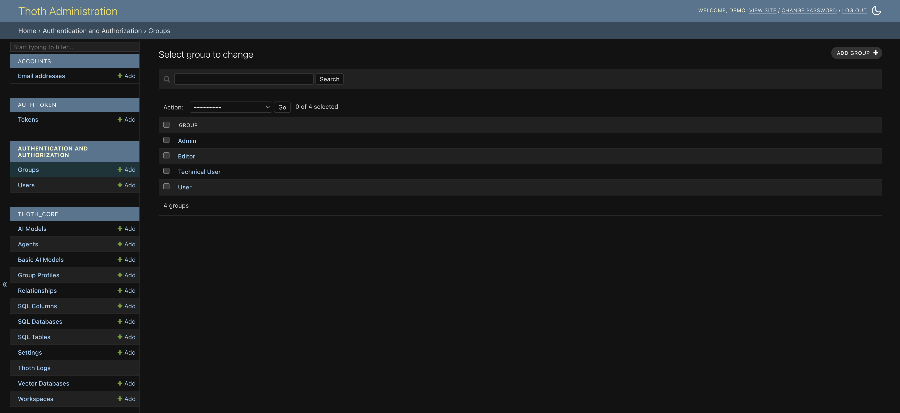

ThothAI Setup – Required Activities
After completing the base installation of ThothAI, you need to perform a few configuration tasks to tailor the system to your needs.
A significant portion of the setup happens in the product's admin area.

Below are the primary tasks to complete:
1. Complete the Group Setup
Groups define three levels of access:
- Admin: access to the administrative area
- Editor: creation, modification and deletion of Evidence, Questions and Columns in the vector database
- User: selective visualization of SQL outputs based on their profile (e.g. User_Basic sees only the natural language explanation, User_Tech also sees the generated SQL)
Assign each user to the group that best fits their profile and needs.
For details on group management see:
Configuring Groups is the first step and is essential for proper system operation because it underpins authorization features and, partly, workflow management.
Required checks:
- Verify that the key Groups exist
Group verification
Make sure the Admin, Editor and at least one User group exist.
Default groups
By default, the python manage.py import_groups command, which is automatically run during the Docker installation, creates the following groups:
- Admin
- Editor
- User_Basic
- User
- User_Tech
- Verify Admin permissions
Make sure the Admin group has all administration privileges. It is recommended to add every Django superuser to the Admin group.
- Configure per-group visibility
Check that the Group Profile is properly configured, because it determines what information each user sees during natural language searches. Update if needed.
2. Create the real users
Use the sample user
The python manage.py import_users command run during installation creates the demo user with password demo1234. Use this user as a reference when creating real accounts.
- Inspect the configuration of the sample users
- Create the real users following the same pattern
- Assign each user to the appropriate group
Learn more
3. Verify the AI Models
Check AI models
Before configuring the Agents it is essential to ensure that all required models are available.
Tasks:
- Verify that all needed
AiModelentries are present - The
import-all_csvscommand created default configurations; add other providers not included in the default setup as required
Learn more
4. Verify the Agents
AI agent configuration
Agents are core components that use AI models to perform specific operations.
Checks:
- Ensure that all required
Agententries exist - The
import-all_csvscommand created default agents; add any custom agents you may need
Learn more
5. Set up the vector databases
One-to-One relationship: Collection and relational database
Each relational database requires a dedicated collection in the vector database. The collection stores key metadata (Evidence, Gold SQL) that enrich the context for natural language SQL generation.
Required configuration:
- Configure the vector databases used by the application (ThothAI ships with Qdrant in Docker by default)
- Verify the correct association between vector databases and relational databases
Learn more
6. Set up the relational database
Target database
The relational database contains the data you query. It can be local, Docker-based or hosted on external servers.
Required configuration:
- Define the connection to the relational database (host, port, credentials)
- Verify connectivity and permissions
Learn more
7. Configure the Settings
System parameters
Settings contain key parameters for preprocessing and for the frontend.
Parameters to configure:
- LSH similarity options for preprocessing and data selection before SQL generation
- Criteria for applying schema linking
Learn more
8. Configure the Workspace
Working environment
The Workspace ties together the relational database, AI Agents and authorized users.
Required configuration:
- Associate the relational database and the AI agents to the workspace
- Configure the users and their access permissions
Learn more
Summary
Setup completed
By completing these eight activities, ThothAI will be configured and ready to use.
Final checklist:
- [ ] Groups configured correctly
- [ ] Real users created and assigned to groups
- [ ] AI Models verified and completed
- [ ] Agents tailored to your needs
- [ ] Vector databases configured with one collection per relational database
- [ ] Relational databases configured and tested
- [ ] System Settings adjusted properly
- [ ] Workspaces configured with the proper associations
Order of execution
We recommend following the order shown above because some configurations depend on the previous ones.